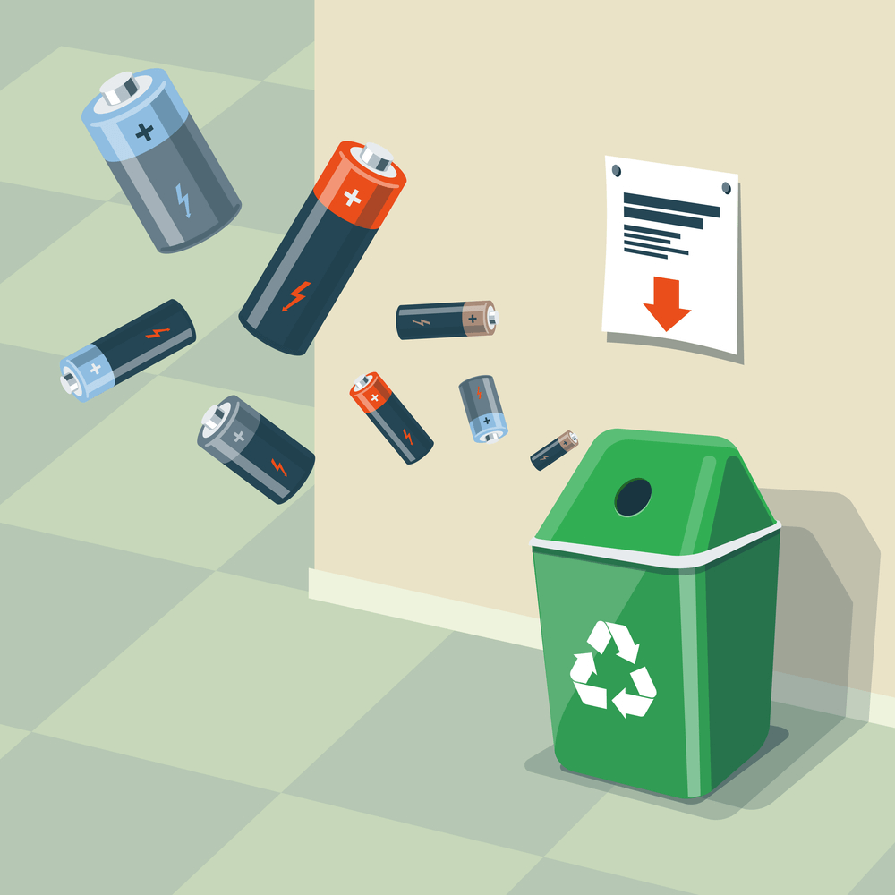

Proiect STEAM „Colectarea bateriilor - un pas pentru un mediu curat”
Pe scurt despre proiect.
Proiectul STEAM „Colectarea bateriilor - un pas pentru un mediu curat” a fost inițiat în martie 2022, în parteneriat cu alte două instituții din țară și anume IP Gimnaziul „Mihai Eminescu”, or. Cantemit și LT „Vasile Alecsandri”, or. Chișinău. Scopul acestui proiect este de a sensibiliza comunitatea desprte pericolul depozitării greșite a bateriilor, prin desfășurarea sondajelor, elaborarea de pliante și postere și răspândirea lor ulterioară, și motivarea pentru colectarea corectă și centralizată în fiecare instituție școlară, prin confecționarea unui tomberon care a fost amplasat în holul instituției, astfel fiind accesibil pentru toți. Ulterior, în anul următor de studii acest proiect a fost extins în toate școlile din raionul Cantemir, astfel având un impact mai considerabil.
Denumirea grupurilor și sarcinile corespunzătoare:
- gr. Știință: Cercetare, achiziționarea informației, desfășurarea sondajelor;
- gr. Tehnologie: Eleborarea posterului și pliantelor, crearea site-ului;
- gr. Inginerie: Schița tomberonului și construcția lui;
- gr. Artă: Aspectele estetice ale tomberonului, posterelor, pliantelor și a textului;
- gr. Matematică: Calcule ale numărului de baterii, a suprafeței salvete, a avantajului economic și prelucrarea statistică.
{kind=link}
{kind=link}
{kind=link}
{kind=link}
{kind=link}
{kind=link}
{kind=link}
{kind=link}